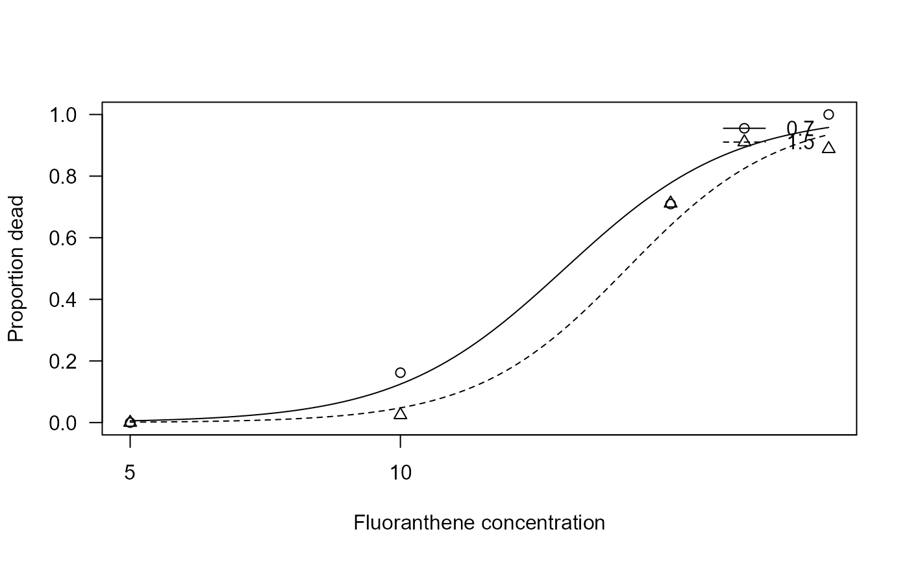

Death of fathead minnow larvae after exposure to fluoranthene
fluoranthene.RdFathead minnow larvae were exposed to fluoranthene, a polycyclic aromatic hydrocarbon, under two different algal densities resulting in different levels of ambient ultraviolet radiation. Number of dead larvaes were reported.
Usage
data(fluoranthene)Format
A data frame with 24 observations on the following 4 variables.
algalconca numeric vector
conca numeric vector
totalnuma numeric vector
mortalitya numeric vector
Source
M. W. Wheeler, R. M. Park, and A. J. Bailer (2006). Comparing median lethal concentration values using confidence interval overlap or ratio tests. Environmental Toxicology and Chemistry, 25:1441–1444.
Examples
library(drc)
## Displaying the data
head(fluoranthene)
#> algalconc conc mortality totalnum
#> 1 0.7 5 0 23
#> 2 0.7 5 0 19
#> 3 0.7 5 0 20
#> 4 1.5 5 0 22
#> 5 1.5 5 0 25
#> 6 1.5 5 0 24
## Fitting a two-parameter log-logistic model for binomial response
## with different curves per algal concentration
fluoranthene.m1 <- drm(mortality/totalnum ~ conc, algalconc, weights = totalnum,
data = fluoranthene, fct = LL.2(), type = "binomial")
summary(fluoranthene.m1)
#>
#> Model fitted: Log-logistic (ED50 as parameter) with lower limit at 0 and upper limit at 1 (2 parms)
#>
#> Parameter estimates:
#>
#> Estimate Std. Error t-value p-value
#> b:0.7 -4.61836 0.53249 -8.6731 < 2.2e-16 ***
#> b:1.5 -5.14932 0.64726 -7.9556 1.78e-15 ***
#> e:0.7 15.24767 0.73337 20.7914 < 2.2e-16 ***
#> e:1.5 17.88383 0.77174 23.1735 < 2.2e-16 ***
#> ---
#> Signif. codes: 0 '***' 0.001 '**' 0.01 '*' 0.05 '.' 0.1 ' ' 1
## Plotting the fitted curves
plot(fluoranthene.m1, xlab = "Fluoranthene concentration",
ylab = "Proportion dead")
